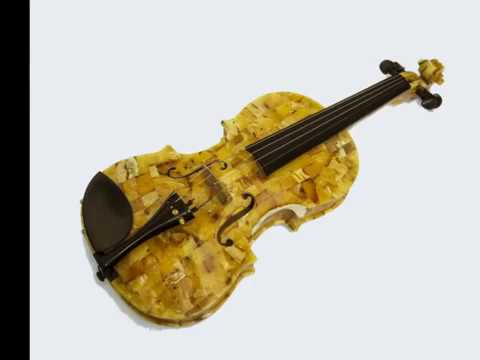

Menų studija „Žaismas“ » Smuikas
2020.10.30 03:35
Vaikučiams iki 3 metų Muzika 3-5 metų vaikams Dailė ir keramika Dainavimas Muzika Anglų kalba Būgnai „Pažink pasaulį“ Teatriukas 3 pamokėlių mozaikos Mokyklinio amžiaus vaikams Dailė ir keramika Dainavimas Fortepijonas Gitara, ukulėlė Smuikas Šachmatai Būgnai Jaunuoliams ir suaugusiems Klasikinis – operinis vokalas Dainavimas Gitara, ukulėlė Fortepijonas Smuikas Dailė ir keramika Būgnai Registracija Naujienos Archyvas Kontaktai Organizuojame šventes Stovykla Vaikučiams iki 3 metų Muzika 3-5 metų vaikams Dailė ir keramika Dainavimas Muzika Anglų kalba Būgnai „Pažink pasaulį“ Teatriukas 3 pamokėlių mozaikos Mokyklinio amžiaus vaikams Dailė ir keramika Dainavimas Fortepijonas Gitara, ukulėlė Smuikas Šachmatai Būgnai Jaunuoliams ir suaugusiems Klasikinis – operinis vokalas Dainavimas Gitara, ukulėlė Fortepijonas Smuikas Dailė ir keramika Būgnai Registracija Naujienos Archyvas Kontaktai Organizuojame šventes Stovykla
Smuikas
Marina Matulevičienė
„Kai mama mane dar mažą atvedė į muzikos mokyklą, tikriausiai smuikas pats mane išsirinko. Nuo tos dienos jis lydi mane visą gyvenimą
Esu ilgametę pedagoginę patirtį turinti mokytoja metodininkė, baigusi Vilniaus Juozo Tallat Kelpšos konservatoriją ir Lietuvos muzikos ir teatro akademiją.Su savo mokiniais aktyviai dalyvaujame koncertuose, respublikiniuose festivaliuose ir konkursuose, turime nemažai laimėjimų.
Mano pamokų tikslas – atskleisti mokiniui smuiko griežimo paslaptis, išmokyti kurti harmoniją savyje ir aplink save, pasitelkus smuiko garsą, tembrą, spalvų įvairovę, vibraciją bei melodiją. Griežimas smuiku – tai pokalbis su savo vidiniu „aš“.
Kainos
(Į kainą įskaičiuoti visi pamokų reikmenys.)
Smuiko pamokos yra individualios.
Smuikas 1 k./sav. 30 min45 min
60 min 52 €/mėn.
64 €/mėn.
80 €/mėn. Smuikas 2 k./sav. 30 min
45 min 88 €/mėn.
112 €/mėn. Bandomoji smuiko pamoka 30 min
45 min
60 min 14 €
17 €
22 € Vienkartinės smuiko pamokos be sutarties 30 min
45 min
60 min 17 €
20 €
25 €
Tvarkaraštis
Smuiko pamokų tvarkaraštis derinamas individualiai tel.868534424.
Registracija
Papildoma informacija ir registracija tel.868534424 arba el. p. info@zaismas.lt
Sukūrė UAB "SIVOS STUDIJA"- smuikas - išsamiai DELFI.lt
- Smuikas – RUDAMINOS MENO MOKYKLA
- Smuikas Strunal 160 4/4 | Tamsta - Muzikos prekių parduotuvė
- Menų studija „Žaismas“ » Smuikas
- Smuikas - Life is music
- Smuikas - Cantores David
- Smuikas – ELIP (Enciklopedija Lietuvai ir pasauliui)
- Smuikas "VIVENTE" - MUSICstudio
- smuikas - Paslaugos.lt portalas Nr.1
- Smuikas – Pažink instrumentus!
- smuikas - išsamiai DELFI.lt
Smuikas, kas tai? Tai, – styginis instrumentas turintis keturias stygas, suderintas kvintomis*. Jis yra pats mažiausias ir aukščiausiai suderintas instrumentas, priklausantis smuiko šeimai. Smuiko istorija - pirmą kart smuikas pasirodė šiaurės Italijoje ankstyvame XIVa. Manoma, kad pirmieji smuikų gamintojai sudėjo tris skirtingus to meto muzikinių instrumentų tipus: senovinį ...
- Smuikas – RUDAMINOS MENO MOKYKLA
Smuikas – styginis instrumentas turintis keturias stygas, suderintas kvintomis.Žemiausia styga yra G („sol“). Tai yra pats mažiausias ir aukščiausiai suderintas instrumentas, priklausantis smuiko šeimai. Šiai šeimai taip pat priklauso violončelė ir altas.Panašus gaubtas styginis kontrabosas praktiškai priklauso tai pačiai, bet šiek tiek atskirai violų šeimai.
- Smuikas Strunal 160 4/4 | Tamsta - Muzikos prekių parduotuvė
Smuikas tai styginis instrumentas dažiausiai turintis keturias stygas ir grojamas su stryku. Smuikai gali būti įvairių dydžių nuo 4/4 iki 1/64. Tai reiškia, kad kuo didesnis dydžio vardiklis tuo mažesnis bus smuikas. 4/4 dydžio smuikas dar vadinamas pilno dydžio smuiku. Šis smuikas skirtas suaugusiems.
- Menų studija „Žaismas“ » Smuikas
Smuikas – styginis instrumentas turintis keturias stygas, suderintas kvintomis. 90 santykiai.
- Smuikas - Life is music
Smuikas (pasiklausykite) – styginis instrumentas, kuris ankstyvajame XVI a. pasirodė šiaurės Italijoje. Tai pats mažiausias ir aukščiausiai suderintas instrumentas, priklausantis smuiko šeimai. Šiai šeimai taip pat priklauso violončelė ir altas.
- Smuikas - Cantores David
Taigi šio darbo objektas – smuikas lietuvių liaudies kultūroje. Tikslai: aprašyti, kokie buvę pirmieji smuikai, kaip, kur ir iš ko gaminami, kokiose vietovėse ir kokiu laikotarpiu naudojami, kokie papročiai apipynę grojimą smuiku.
- Smuikas – ELIP (Enciklopedija Lietuvai ir pasauliui)
Raskite paslaugas pagal raktažodį smuikas visoje Lietuvoje. Darbų pavyzdžiai, paslaugų kainos, rekomendacijos.
- Smuikas "VIVENTE" - MUSICstudio
muzika, smuikas, Groti smuiku, mergina smuikas, Klasikinė muzika, klasikinis, žaisti; 2202x1468px
- smuikas - Paslaugos.lt portalas Nr.1
Smuikas "HIDERSINE" Klevo mediena (light flamed maple) 220.00€ Dydis:
- Smuikas – Pažink instrumentus!
Smuikas – styginis instrumentas turintis keturias stygas, suderintas kvintomis. Smuikas pasirodė šiaurės Italijoje ankstyvame XIV a. Manoma, kad pirmieji smuikų gamintojai sudėjo tris skirtingus to meto muzikinių instrumentų tipus: senovinį tristygį smuiką, Renesanso fidelį ir lyrą.
Smuikas, kas tai? Tai, – styginis instrumentas turintis keturias stygas, suderintas kvintomis*. Jis yra pats mažiausias ir aukščiausiai suderintas instrumentas, priklausantis smuiko šeimai. Smuiko istorija - pirmą kart smuikas pasirodė šiaurės Italijoje ankstyvame XIVa. Manoma, kad pirmieji smuikų gamintojai sudėjo tris skirtingus to meto muzikinių instrumentų tipus: senovinį ...
Smuikas – styginis instrumentas turintis keturias stygas, suderintas kvintomis.Žemiausia styga yra G („sol“). Tai yra pats mažiausias ir aukščiausiai suderintas instrumentas, priklausantis smuiko šeimai. Šiai šeimai taip pat priklauso violončelė ir altas.Panašus gaubtas styginis kontrabosas praktiškai priklauso tai pačiai, bet šiek tiek atskirai violų šeimai.
Smuikas tai styginis instrumentas dažiausiai turintis keturias stygas ir grojamas su stryku. Smuikai gali būti įvairių dydžių nuo 4/4 iki 1/64. Tai reiškia, kad kuo didesnis dydžio vardiklis tuo mažesnis bus smuikas. 4/4 dydžio smuikas dar vadinamas pilno dydžio smuiku. Šis smuikas skirtas suaugusiems.
Smuikas – styginis instrumentas turintis keturias stygas, suderintas kvintomis. 90 santykiai.
Smuikas (pasiklausykite) – styginis instrumentas, kuris ankstyvajame XVI a. pasirodė šiaurės Italijoje. Tai pats mažiausias ir aukščiausiai suderintas instrumentas, priklausantis smuiko šeimai. Šiai šeimai taip pat priklauso violončelė ir altas.
Taigi šio darbo objektas – smuikas lietuvių liaudies kultūroje. Tikslai: aprašyti, kokie buvę pirmieji smuikai, kaip, kur ir iš ko gaminami, kokiose vietovėse ir kokiu laikotarpiu naudojami, kokie papročiai apipynę grojimą smuiku.
Raskite paslaugas pagal raktažodį smuikas visoje Lietuvoje. Darbų pavyzdžiai, paslaugų kainos, rekomendacijos.
muzika, smuikas, Groti smuiku, mergina smuikas, Klasikinė muzika, klasikinis, žaisti; 2202x1468px
Smuikas "HIDERSINE" Klevo mediena (light flamed maple) 220.00€ Dydis:
Smuikas – styginis instrumentas turintis keturias stygas, suderintas kvintomis. Smuikas pasirodė šiaurės Italijoje ankstyvame XIV a. Manoma, kad pirmieji smuikų gamintojai sudėjo tris skirtingus to meto muzikinių instrumentų tipus: senovinį tristygį smuiką, Renesanso fidelį ir lyrą.
